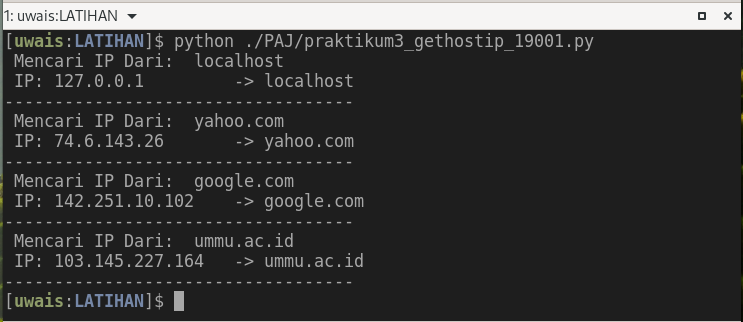

PAJ Pertemuan 04
PERTEMUAN KEEMPAT 04 - Praktikkum 3 :
| Status | : Online |
| Schedule | : Online |
| Waktu | : 05/04/2022 |
| Tema | : Get IP by Host Name |
-
Kerjakan Tugas Praktikum 3 Dibawah dan kumpul ke Folder
PAJ_NPMdi Google Drive anda, Bagi yang belum memiliki folderPJA_NPMdiGoogle Driveseilahkan baca langkah-langkah yang ada di Pertemuan Pertama ini -
Pada Praktikum 3 ini membahas TEMA tentang code python untuk melihat IP dari sebuah HOST berdasarkan NAMA HOST yang kita INPUT, selanjutnya Hasil yang akan dikembalikan adalah IP dari nama host tersebut.
-
Silahkan Lalkukan Praktikum bersama Teman-Teman agar dapat menyelesaikan masalah bersama dan agar anda mudah paham materi praktikumnya.
Pengganti Pertemuan ke 4
- Tulis Code dibawah dengan Aplikasi Editor.
- Pada code terdapat empat (4) NAMA HOST yaitu “localhost”, “yahoo.com”, “google.com”, dan “ummu.ac.id”, silahkan anda TAMBAHKAN lagi NAMA HOST/DOMAIN selain yang empat tersebut sehingga genap total menjadi sepuluh HOST/DOMAIN.
-
Simpan dengan Beri nama file dengan
praktikum3_gethostip_NPM.py(ubah NPM dengan lima digit terakhir npm anda) -
Contoh nama file :
praktikum3_gethostip_19001.py -
Jalankan di CMD/Terminal, perintahnya : python praktikum3_gethostip_19001.py
-
Jalankan dan Jika Tidak Ada Error, ambil/buat
ScreenShotdari hasilnya dan beri namapraktikum3_gethostip_19001.JPGataupraktikum3_gethostip_19001.PNG. - Jadi total ada 2 (dua) file yang harus di-Upload/Kirim ke
GDrive, yaitu:- File Code :
praktikum3_gethostip_19001.py - File Screenshot :
praktikum3_gethostip_19001.PNGataupraktikum3_gethostip_19001.JPG
- File Code :
-
Silahkan Upload/Kirim 2 (dua) file tersebut ke FOLDER
PAJ_NPManda masing-masing yang di GDRIVE (Google Drive). - Batas Waktu Kumpul sampai sebelum Pertemuan berikutnya masuk.
The CODE
- Code ini Berjalan di OS Linux maupun Windows
# Code ini Untuk LINUX dan Windows.
# Code/Script praktikum 3
# Tema : Get IP by Host Name
# nama : ??
# npm : 19???
import socket as soc
# TUGAS:
# Tambahkan ENAM (6) HOST/DOMAIN agar lengkap menjadi SEPULUH (10)
HOSTS = ['localhost',
'yahoo.com',
'google.com',
'ummu.ac.id']
for HOST in HOSTS:
print(' Mencari IP Dari: ',HOST)
IP_ADDR = soc.gethostbyname(HOST)
print(" IP: {:<17} -> {}".format(IP_ADDR, HOST))
print("-"*35)
Screenshot HASIL Code:
- Berikut merupakan HASIL screenshot dari code diatas: 
by: ikhwan@fedora.linux